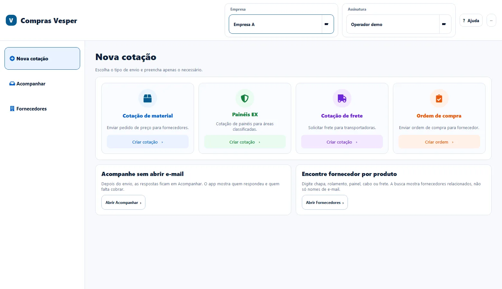
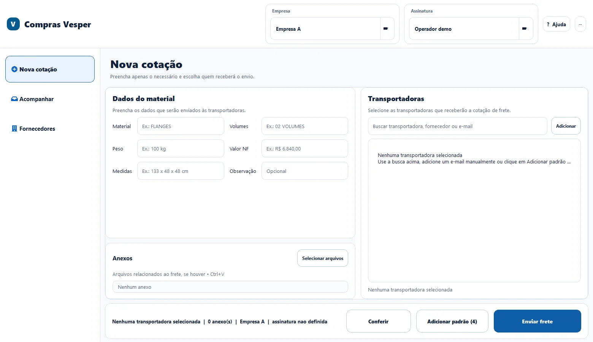
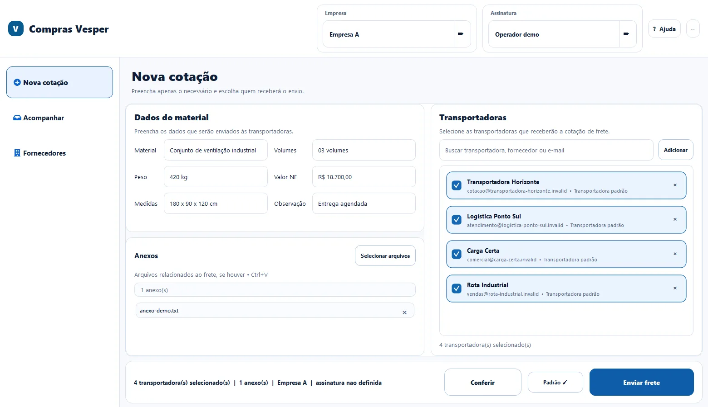
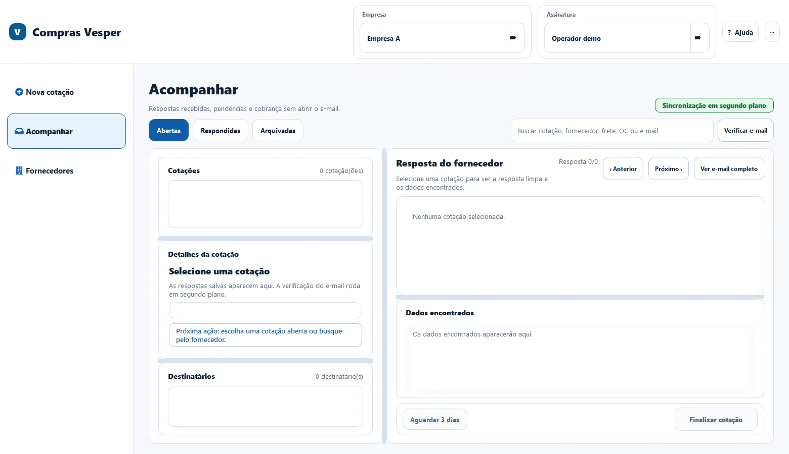

Context and problem
Suppliers, attachments and responses were scattered across spreadsheets, messages and emails.
CASE / COMPRAS-VESPER
INTERNAL USEDesktop purchasing automation
Quotation cockpit to find suppliers, compose requests, review recipients and track responses through IMAP.

SCREENS AND FLOWS



About the images
The images below show the real product or sanitized reconstructions. When something is not a direct capture, the caption says so.
Public version limits
Operational data, credentials, private integrations and client information are not part of this publication.
Suppliers, attachments and responses were scattered across spreadsheets, messages and emails.
Desktop architecture, search, SMTP/IMAP, queue, auditing, tests, packaging and deployment.
PySide6, SQLite/WAL, durable queue, backoff, idempotency, IMAP tracking and local secrets protected by DPAPI.
Limits of this version
Demo mode blocks SMTP, IMAP and network access in code.
Next steps
Evolution depends on the state and limitations described in this case; it is not presented as an already delivered capability.
The public version contains no credentials, personal data or sensitive internal information.